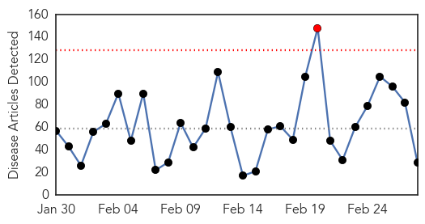
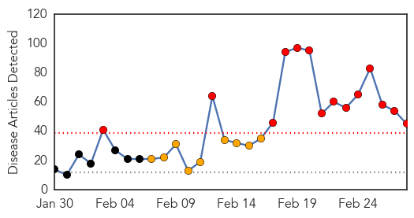

Unknown
30-Day Web Trend
1 alerts, 0 warnings

30-Day Twitter Trend
0 alerts, 0 warnings

Article Locations

Article Confidences

Top Articles:
- 0.977
- The Flu Nasal Spray Vaccine for Children Is Just like A Placebo. It Has Zero Effectivity Rate, the CDC.
- 0.967
- Deadly bacteria outbreak linked to UCLA microscopes
- 0.939
- Mounting cases set off rat fever alarm in Sri Lanka
- 0.917
- Chicago Tribune
- 0.917
- Chicago Tribune
- 0.917
- Chicago Tribune
- 0.917
- Chicago Tribune
- 0.917
- Chicago Tribune
- 0.910
- The world windows to Thailand
- 0.900
- Nine-banded armadillos thought to have caused LEPROSY in Florida patients
- 0.886
- Three New Cases Of Leprosy Confirmed In Volusia County, Florida
- 0.871
- 3 Leprosy Cases Confirmed in Florida
- 0.861
- Chinese Immigrants In Sunset Park Struck By Tuberculosis Outbreak
- 0.850
- NewsDaily
- 0.753
- Number of Leprosy Cases relatively Less, but Increasing
- 0.718
- Florida county sees small rare increase in leprosy cases
- 0.710
- Florida county sees small, rare increase in leprosy cases
- 0.701
- 5 Tuberculosis cases reported in Black Hawk County this year
- 0.682
- Patient Files Lawsuit against Scope Marker Linked to Superbug Infection
- 0.632
- The Parkinson’s Mystery By Gill Nelson & Brad A. Racette
- 0.625
- Work at NCP hospitals grind to a halt
- 0.621
- New Study Confirms Negative Impact of Fluoride On Thyroid Gland
- 0.557
- Blood biomarkers found for chronic fatigue syndrome
- 0.549
- Healthcare demands equality
- 0.527
- Deputy Director Dubai Medical District opens 2nd Arab Paediatric Medical Congress
- 0.524
- How Birds Could Make Lyme Disease a National Problem
- 0.520
- Chronic fatigue syndrome is a biological illness: Study
- 0.511
- Dr. Charles M. O’Connor: Ask about cleaning medical equipment
- 0.501
- DOH: Catanduanes is disease-free
Top Tweets:
- 0.571
- RT: 2/2 MERS: only 2 months ever have racked up more cases in KSA, during major hospital outbreaks. Has detection/investi…
- 0.571
- 2/2 MERS: only 2 months ever have racked up more cases in KSA, during major hospital outbreaks. Has detection/investigation declined?
- 0.562
- I think today's MERS cases bring KSA's Feb total to a jaw-dropping 73 cases & 31 deaths - supposedly without major hospital outbreaks 1/2
- 0.514
- AFD blog `@CDCgov H5 Avian Flu Update' CDC H5 Avian Flu Update H5N8
Swine Flu
30-Day Web Trend
14 alerts, 9 warnings

30-Day Twitter Trend
3 alerts, 0 warnings

Article Locations

Article Confidences
Top Articles:
- 1.000
- Madhya Pradesh: Two swine flu deaths in Indore
- 1.000
- As swine flu cases rise, docs attempt to downplay fear
- 0.999
- Swine Flu Death Toll Rises to 1,041
- 0.999
- Karachi hospitals ill-prepared to deal with swine flu
- 0.998
- Karachi hospitals ill-prepared to deal with swine flu
- 0.997
- Swine flu in Mumbai: 3-year old boy succumbs to the disease
- 0.995
- Bengal hospitals refusing swine flu patients: NGO tells Mamata
- 0.995
- Swine Flu cases up in Gujarat, death toll at 265
- 0.995
- Two more positive cases take swine flu tally to 11
- 0.995
- Swine flu tightens its grip over India
- 0.995
- Swine Flu Death Toll Rises to 1,041
- 0.995
- Swine flu tightens its grip over India
- 0.994
- Swine flu tightens its grip over India
- 0.994
- Praveen Togadia asks Centre to declare swine flu as national emergency
- 0.988
- Swine Flu Kills 965 in India as It Battles Problems with Diagnosis
- 0.988
- Swine flu claims 9 more lives in Gujarat; toll reaches 265
- 0.988
- Sonam Kapoor diagnosed with swine flu
- 0.986
- Swine flu claims nine more lives in Gujarat; toll reaches 265
- 0.985
- Sonam Kapoor tests positive for swine flu
- 0.984
- Swine flu Death toll Reaches 256 and 4,162 Cases
- 0.984
- Govt Admits to Shortage of Labs for H1N1 Testing
- 0.984
- Rain makes temp drop, swine flu to spread more
- 0.983
- School draws flak for asking some kids to skip classes
- 0.980
- Sonam Kapoor tests positive for swine flu
- 0.970
- Army man dies of Swine Flu in Kashmir
- 0.961
- CPR hospital ill-prepared to tackle swine flu: Activists
- 0.929
- Mumbai: Sudden rains can wreak havoc on your health
- 0.894
- 'Prem Ratan Dhan Payo' Actress Sonam Kapoor Tests Positive for Suspect Swine Flu
- 0.892
- The Indian Express
- 0.865
- Drive to catch stray pigs launched
- 0.865
- Soldier dies of Swine Flu in Jmu
- 0.835
- Sonam Kapoor tests positive for swine flu
- 0.806
- Actress Sonam Kapoor hospitalised; swine flu test conducted
- 0.800
- Sonam Kapoor down with swine flu
- 0.793
- Actress Sonam Kapoor down with swine flu
- 0.786
- JK Governor reviews H1N1 with MoHFW’s experts
- 0.727
- Sonam Kapoor suffering from cough and cold; sources close to the actress refute Swine Flu rumours
- 0.720
- Actress Sonam Kapoor tests positive for Swine Flu!
- 0.710
- Swine Flu-hit Chennai Nurse in Kumari GH
- 0.678
- H1N1: No Fresh Death in Kashmir
- 0.642
- Sonam Kapoor seeks check-up in Rajkot hospital
- 0.642
- Sonam Kapoor has swine flu
- 0.639
- Actress Sonam Kapoor down with swine flu
- 0.633
- Sonam Kapoor suffering from cough and chilly; sources close to the actress refute Swine Flu rumours
- 0.619
- Actress Sonam Kapoor down with swine flu
Top Tweets:
-
No tweets found for Feb 28, 2015